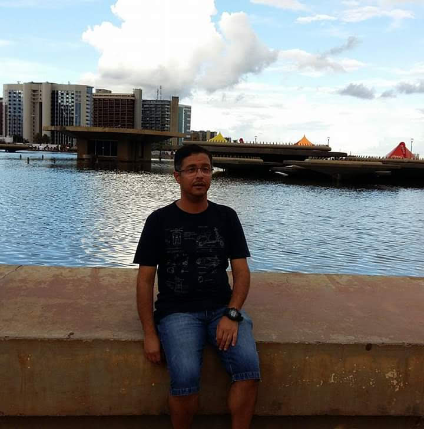
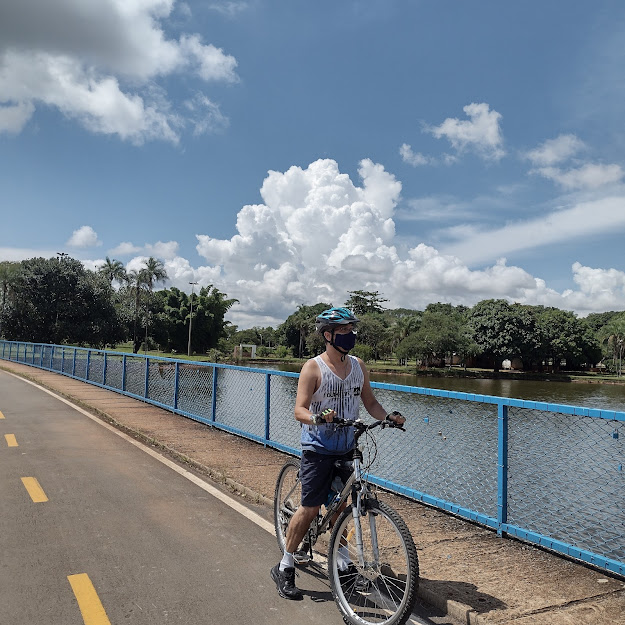

Gosto de ouvir música, tocar violão, assistir TV, andar de bicicleta, ficar perto da família, ir ao parque da cidade e ao cinema as vezes, mas se a rotina for quebrada de vez enquando tá tudo certo.

Locais: DATA CONTROL e SARMENTO.
Local: SENAC
Local: CENTROPLAN
Local: Círculo Operário do Cruzeiro
Local: RAM FILE-Informática
Local: CEPED CURSOS
Local: CEPED CURSOS
Local: PRAXIS
Função:Contínuo (Offce Boy, serviços diversos internos e externos)
Período: de 17/04/2000 a 31/08/2000
Função:Operador de Telemarketing (atendimento e cadastro de estudantes))
Período: 02/09/2005 A
Função:Auxiliar de Documentação (setor de arquivo- Projeto SEBRAE)
Período: 23/06/2008 a 02/06/2012
Função:Auxiliar Administrativo - Ministério da Cultura (recebimento, conferência e arquivamento de processos /documentos)
Período: 06/03/2013 a 10/05/2013
Fução: substituições temporárias dos funcionários efetivos, exercendo atividades específicas de cada setor nos Ministérios das Comunicações e da Cultura
Período: de 2006 a 2008 e de 2012 a 2014
Fução: Aux. de Escritório
Período: 22/07/2014 a 21/03/2018
Fução: Aux. de vendas
Data de início 15/05/2019

Os exercícios físicos, de modo geral, são necessários para um corpo saudável e cheio de energia, previne várias doenças causadas pelo sedentarismo.